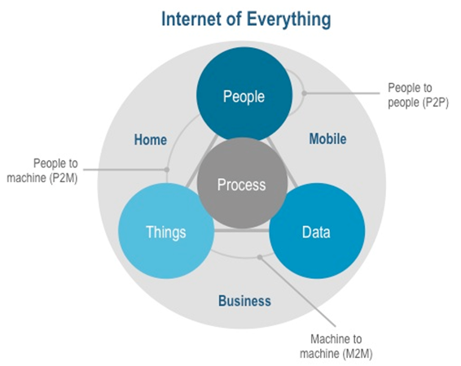

Internet das Coisas(){
i++
Por: Felipe Calixto Milken Neto
Internet das coisas
A internet das coisas pode ser definida como uma tecnologia que visa conectar pessoas e objetos a fim de estabelecer uma comunicação entre eles, ou seja, ela permite que um sistema possa realizar o gerenciamento de outro. De uma maneira mais simples, tudo que possui uma etiqueta eletrônica (denominada tag), terá a capacidade de se conectar por meio desta grande rede virtual, como computadores, notebooks, tables, celulares, eletrodomésticos, automóveis entre outros objetos, criando ambientes inteligentes que podem ser gerenciados por outro sistema, como telemóveis, facilitando as atividades cotidianas.
O objetivo principal é criar um sistema global de registro de bens usando a single numbering system chamado Eletronic Product Code. A Internet das coisas é uma revolução tecnológica que representa o futuro da computação e da comunicação e cujo desenvolvimento depende da inovação técnica dinâmica em campos tão importantes como os sensores wireless e a nanotecnologia.
Um exemplo bastante conhecido relacionado a internet das coisas é a automoção residencial, ou seja, os cômodos da casa utilizam dessas tags para comunicar entre si, que podem ser comandados via celular ou outro aparelho com acesso a rede. A empresa Tecsul oferece esse serviço há 19 anos e possui uma sede na cidade de Florianópolis, utilizando de tecnologia já explorada em países como Canadá, Estados Unidos e Inglaterra. A empresa oferece um aplicativo para celular com tecnologia Android ou iOS que permite gerenciar a residência, como por exemplo programar o ambiente ideal para em casa após o trabalho, controle de câmeras instaladas na casa (provendo segurança ao ambiente) e permitindo também uma economia com questão a gastos de energia e água.

Imagem retirada de: IDG
Na figura podemos perceber a relação proposta no modelo da Internet das coisas. Ela permite uma interação entre as pessoas e o ambiente automatizado, como o exemplo da casa automatizada que foi citado anteriormente. É bem provável que, futuramente, haverá uma rede composta exclusivamente de objetos em interação mais avançada e expandida à todos, que resultará na automatização de diversas tarefas presentes no cotidiano e trocas de informações.
}